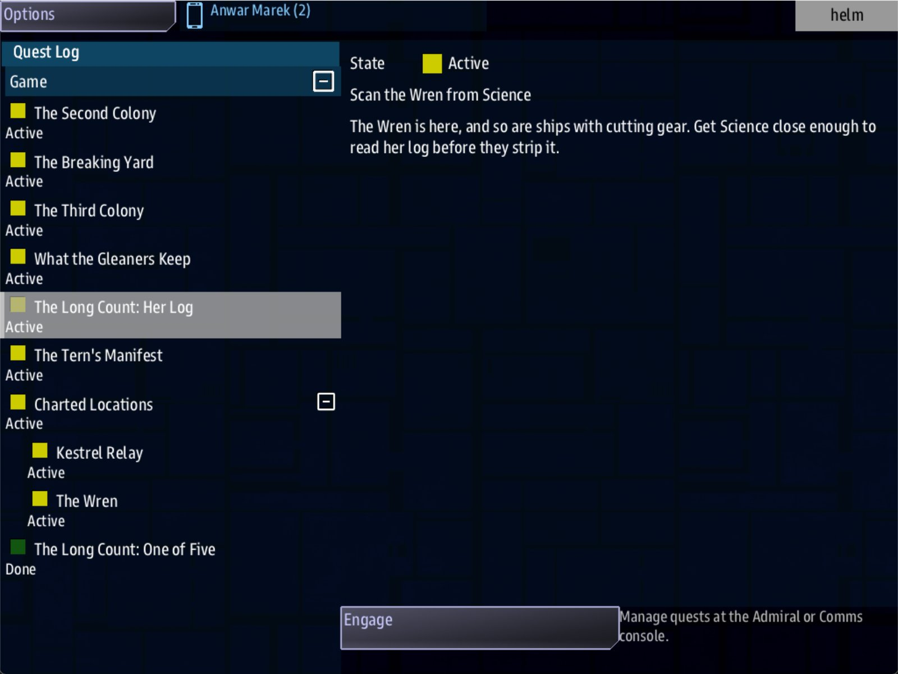

Class 6, Lecture 8 - Playtesting¶
What you will have at the end¶
A way of finding out what your campaign does to real people, and a record of the first time you tried. Before the crew arrives you run three checks that take ten minutes. While they play you say nothing and write. Afterward you read what the game recorded, compare it with what you planned, and change three things.
And one change already made: the first thing a playtest of evening 1 finds is that the crew does not know what to do when they get there. So two steps get an order, in plain words, at the top.

A step in the Quest Log with its order: "Scan the Wren from Science."You add a page, playtest.md. You add one line each to two steps.
The video¶
About 5 minutes. Subtitles are available in the player.
Before you start¶
- Your
MyUniversemission as Lecture 7 left it.kestrel_verge.amdmatchesc6-07-mixing-the-play-styles\example\. sbs lint MyUniversesaysclean.- At least two people who have not read your files, for an hour. One is enough to learn something. None is not a playtest.
Words for this lecture:
| Word | Meaning |
|---|---|
| Playtest | An evening played by people who do not know the answers, with you watching |
| Table | The people, and the room. "Running a table" is being the one who started the game and keeps it going |
| Walk | Playing through alone, as fast as you can, to see that the steps are joined |
| Log | Your notes from one playtest. Also the two files the game writes: mast.runtime.log and mast.compile.log |
Step 1 - Three checks before anybody arrives¶
Each one sees something the others cannot. Do them in this order.
Check 1 - Lint.
clean, or you are not ready.
Check 2 - Read the spine in the bible.
Open the page it names and go down the beats. Each step of The Long Count has two lines
under it: reached from and leads to. Read only those.
| What you read | What it means |
|---|---|
One of Five has leads to and no reached from |
Right. It is the first step. It starts by itself |
Every later step is reached from the step before it |
The spine is joined |
The act's ending has reached from and no leads to |
Right, until Act Two is written |
The Plover's Price is reached from Three of Five, and the Deepwell Hail leads to it |
An answer finishes it. Both joins are there |
A later step is up in beat 1, and has no reached from |
Nothing reveals it. The crew will never see it |
The bible shows your fields under the names you wrote them with: Starts when, Done
when, Then.
Check 3 - Walk it. Start the game alone and go down the spine with Engage, as in Lecture 5. You are looking for one thing: after each evening's last step, is the next lead in the Quest Log?
Then close the game and delete the save. A crew that sits down to a save you have already walked through starts at the end.
What each check sees. Every row was tried.
| The mistake | Lint | The bible | The walk |
|---|---|---|---|
A Then: reveal that names a key no record has |
Names the line (dangling-reveal) |
The step has no leads to line |
The next step never appears |
| A step nothing reveals | Names the step (never-revealed) |
The step is in beat 1, with the steps that start by themselves, and has no reached from line |
It never appears |
| A landmark at one system and its lead at another | clean |
Nothing | The card does not name the place. No landmark is charted |
A fight with nothing to fight: destroy and no Guards: |
clean |
Nothing | The step cannot be finished |
A lead with no Starts when: line |
clean |
Nothing | It is never in the Quest Log |
| An evening that takes ten minutes, or ninety | clean |
Nothing | Nothing. You know the answers. Only a table finds this |
Step 2 - At the table¶
Make the log before they come. In VS Code: File, New File..., playtest.md, in your
MyUniverse folder. The whole page is in example\playtest.md. This is the part you
fill in while people play:
### The clock
| Part | Planned | Played | What happened |
|---|---|---|---|
| Open | 5 | | |
| Objective | 15 | | |
| Climax | 10 | | |
| Hook | 5 | | |
| Beside the spine: jobs, hails, trade | - | | |
| The whole evening | 35 | | |
### What I wrote down while they played
- **Questions the crew asked out loud:**
- **Things they never found:**
- **Things they did that I had not planned for:**
- **The moment it was best:**
- **The moment it dragged:**
Start the game with a console for each person, and a server:
Then five rules. They are harder than they look.
- Say what the game is, and nothing about the story. "You are the crew of a ship working out of Kestrel Relay. The Quest Log is behind the handheld icon." Then stop.
- Do not answer questions. Write them down. "Where do we go?" is not a question for you. It is a lead that did not say where to go. Every question is a line to rewrite.
- Write the time at each Done. The Quest Log tells you when a step finishes. Write the minute beside its row. That is the Played column.
- Do not stop them leaving the spine. If they take three jobs and never go to the Wren, that is the most useful thing you will learn all week. Write down what they did do.
- End it yourself. When the hook is on the screen, or when the clock says 45, say "that is tonight". If they are mid-step, tell them the step keeps.
Step 3 - Read what the game recorded¶
When they have gone, before you touch the game again, look at three things.
The runtime log. Open mast.runtime.log in your mission folder. It should be empty.
A line in it is something the game could not do with your files. Copy the first line
into your log.
The save. In File Explorer go to C:\Cosmos\data\missions\common_data\saves and
open universe_save_the_kestrel_verge_1.yaml in VS Code. Do not change it. It is a
plain list of what the game remembers, and you can read it.
Near the top, under players: and the ship's own record, is what the ship has earned:
reputation:
hollin:
honesty: 10
generosity: 50
deepwell:
temperament: -20
gleaners:
method: 35
side_credits:
tsn: 2870
That is a ship at the end of Act One, after selling the Count. The save has its own
names for the seven pairs. These four were seen: honesty is honest and liar,
generosity is generous and selfish, temperament is peaceful and violent, method is
resourceful and by-the-book. The number is the score from Class 5 Lecture 4, before the
side's weights turn it into a standing.
Further down, under shared_quests:, is every step of your story, with a state:.
state: |
The step is |
|---|---|
1 |
Open. The crew can see it |
2 |
Hidden, waiting to be revealed |
99 |
Done |
98 |
Failed |
0 |
Never started. It has no Starts when: line the game could use |
Search the file for state: 1. Among your campaign's keys there should be exactly one
step of the spine: the hook. That is where next week begins. If there are none, the
spine is broken behind the last step they did. If there are two, something says at
once that should say revealed.
Under the ship's name, quests: holds the jobs the ship has taken, each with its own
state:.
Keep a copy. Copy the save file to your Documents folder and name it for the
evening: evening_01.yaml. The game's start screen has a New Game choice that
replaces the save without asking (Class 5 Lecture 2). The game keeps the campaign it
replaced, once, in a file ending .previous.bak (Lecture 2). A copy made every week is
the undo you can count on. To go back to it, close the game, and copy it over the save
under the save's own name. It is also the cure for a save that will not load: the game
then refuses to start, and leaves the damaged file as it is (Lecture 2).
[Not tried: putting a copy back. What was measured is that the game reads whatever file has that name when it continues.]
The save has none of your story's words in it. A step is its key and a number. The keys
are still yours, and a key like s05_go tells a curious host there is a fifth evening,
so name keys as you would want them read.
Step 4 - Compare, and change three things¶
Fill in the rest of your log from what you read:
### What the game recorded
| From the save file | The ledger said | The save says |
|---|---|---|
| Credits (`side_credits`) | | |
| Standing with Hollin (`reputation`) | | |
| The open step of The Long Count (`state: 1`) | | |
| Jobs in hand (`players`, then `quests`) | | |
Then write three changes, and no more than three. The usual first three:
| What the log says | What to change |
|---|---|
| "Where do we go?" | The lead's text does not have the two numbers in it, or has them at the end. Put the place in the first sentence |
| "What do we do now?", at the place | The objective has no order. See below |
| The Played column is half the Planned one | The evening is thin. Do not add a step. Look at the rotation's last column: what was on offer beside the spine, and did they know? |
| The Played column is double | Ask for less. Two enemies of three, not three of three |
| They never went home | Nothing told them the evening ends there. Say it in the objective's last sentence |
| Standing is far above the ledger | An answer that earns it is too cheap. Raise its costs |
An order at the top of a step. In Class 1 you gave a quest an Objective: line. The
crew reads it in the Quest Log above your description. A step with none shows only your
description, and a description is atmosphere. Give the two steps where the crew has to
do something other than jump an order.
Find ### [The Long Count: Her Log](s01_scan) and add a line under Done when:.
Find ### [The Long Count: The Plover's Price](s03_ask) and do the same.
An order names the console. That is the cheapest fix in this class, and it answers the question a new crew asks most.
Step 5 - Check it¶
Save your files.
Two mistakes with the new line, each made on purpose and linted. Neither was played.
| The mistake | What lint says |
|---|---|
Objectve: Scan the Wren from Science |
A warning: "Objectve is not a field a quest has, so nothing reads this line. Did you mean Objective?" (unknown-field) |
| The line typed under the closing fence | A warning: "Objective: is a field, and this line is BELOW the closing ---, so it is read as part of the note and does nothing" (field-below-fence) |
Lint still counts one .amd file. playtest.md and campaign.md are not in the count.
Step 6 - Play it again¶
Delete the save. Run the next playtest with different people if you can. A crew that has seen evening 1 cannot tell you whether the new order helps.
In the Quest Log, select The Long Count: Her Log when it appears. Above the description is the line Scan the Wren from Science.
What you need to know about a playtest
| Fact | What it means for your campaign |
|---|---|
| A walk proves the steps are joined, and nothing else | You cannot time an evening you wrote |
| The game records what happened, not why | The save says the crew is at 17 with the Compact. Only your notes say they did not understand what they were selling |
| The save is a file | You can read it, copy it, and keep one for every evening |
| A crew plays an evening once | Each playtest of evening 1 needs people who have not seen it. Save your friends for the evenings you are unsure of |
| Three changes | More than three, and you cannot tell next week which one helped |
If something goes wrong¶
| What you see | Likely cause |
|---|---|
| The crew starts at the end of the act | You walked it and did not delete the save |
The bible's title is MyUniverse |
That is the folder's name. Add --title "The Long Count" |
No __docs__ folder |
The docs command stopped with an error. Read its last line |
| The save file is not there | The title in story.mast is not the one you think. The file is named after it |
| The order does not show above the description | The line is below the closing fence, or Objective is misspelled. Lint names both |
Exercise¶
- Run the three checks on your own universe. Fix what they find before anyone comes.
- Make your
playtest.md, with the Planned column filled in from your sheet. - Run evening 1 for at least one person who has not seen it. Keep the five rules.
- Read the runtime log and the save. Fill in the last table.
- Write three changes. Make them. Lint.
- Copy the save, and name the copy for the evening.
Checkpoint¶
You are done when all five are true:
playtest.mdhas one evening in it, with times in the Played column that came from a watch.- You have a list of the questions the crew asked, in their words.
- You opened the save and found the one open step of your spine.
sbs lint MyUniversesayscleanafter your three changes.- A copy of the save is somewhere outside the game's folder.
Next¶
Lecture 9 is about changing a universe while a crew is partway through it: what is safe, what is not, and how to rehearse a change on a copy of their save. Lecture 10 is how the finished thing reaches a crew that is not in your house.
Further reading¶
- Class 1 Lecture 12, "Ship a quest mission": the three checks for a mission with one map, and what each sees.
- Class 5 Lecture 9, "Organizing a big universe": the four printed editions.
- "Testing missions" in the library's documentation covers tools for people who script. Nothing in it is needed here.
Download this lecture's finished files (a zip of its example folder).